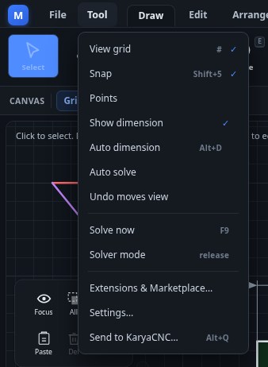
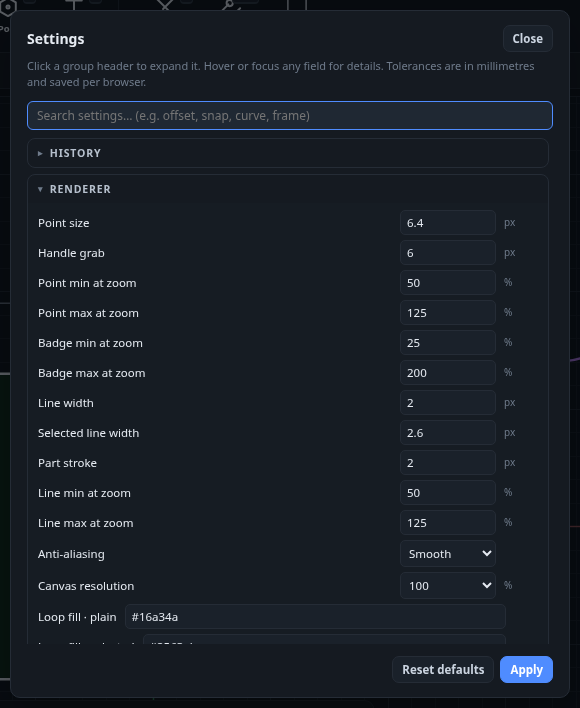

Settings — Pengaturan
Buka melalui Tool ▸ Settings. Semua toleransi dan kepadatan di satu tempat. Nilai diingat per browser. Tekan Apply untuk menyimpan.

Settings dibuka melalui menu Tool ▸ Settings…; di menu yang sama ada toggle cepat View grid (#), Snap (Shift+5), Points, Show dimension, Auto dimension (Alt+D), Auto solve, Undo moves view, serta Solve now (F9), Solver mode, Extensions & Marketplace…, dan Send to KaryaCNC… (Alt+Q).

Dialog Settings dengan kotak pencarian ("Cari pengaturan…"), grup HISTORY / RENDERER / GEOMETRY, nilai per kolom dengan satuan mm/°/ms, serta tombol Reset defaults dan Apply.
Cari pengaturan: gunakan kotak pencarian di atas dialog Settings (mis. offset, snap, curve). Keterangan tiap pengaturan muncul sebagai tooltip saat kolom difokuskan.
0. History (riwayat undo)
| Pengaturan | Default | Keterangan |
|---|
| Undo moves the view | Off | Jika menyala, menekan Undo/Redo juga mengembalikan posisi pan & zoom kamera ke saat langkah tersebut dibuat (diatur lewat menu Tool ▸ Undo moves view). |
1. Renderer (tampilan kanvas)
| Pengaturan | Default | Keterangan |
|---|
| Point size | 6.4 px | Sisi penanda titik persegi pada zoom 100%. |
| Handle grab | 6 px | Seberapa dekat kontrol knob Bézier harus berada untuk menang klik. |
| Point min / max at zoom | 50% / 125% | Ukuran penanda mengikuti zoom, tidak pernah menyusut di bawah min atau melebihi max. |
| Badge min / max at zoom | 25% / 200% | Badge constraint dan label dimensi tidak pernah menyusut/melebihi persentase ini. |
| Line width / Selected line width | 2 px / 2.6 px | Lebar stroke geometri dan objek terpilih pada zoom 100%. |
| Part stroke | 2 px | Lebar stroke part assembly (tidak pernah dipotong/ diekspor). |
| Line min / max at zoom | 50% / 125% | Lebar garis mengikuti zoom dengan batas min/max. |
| Anti-aliasing | On (Smooth) | Matikan = gambar setengah resolusi dan upscale dengan piksel keras (lebih cepat untuk file besar). |
| Canvas resolution | 100% | Resolusi kanvas gambar. 50% isi sepertiganya piksel — dial kecepatan termurah. |
| Loop fill · plain / selected / yellow / gray | warna heksadesimal | Warna dasar fill loop. Loop bersarang lebih dalam otomatis lebih terang. |
| Loop fills · current / other layers | On / On | Mengaktifkan fill interior di layer aktif dan/atau layer lain. |
| Loop fill resolution | 50% | Resolusi layer fill offscreen relatif kanvas. 50% menampilkan setempat piksel fill dan tidak terlihat bedanya. |
| Show frame timing | Off | Menampilkan waktu render per frame (ms) di bilah atas untuk memantau performa pada file besar. |
2. Geometry (toleransi geometri)
| Pengaturan | Default | Keterangan |
|---|
| Chain tolerance | 0.1 mm | Ujung yang lebih dekat dari ini menjadi satu node saat grouping (Ctrl+G) atau offsetting (Ctrl+J). |
| Join tolerance | 0.1 mm | Toleransi CNC: titik yang lebih dekat dari ini dihitung sebagai satu titik sambung. Jaga di bawah setengah segmen terpendek. |
| Loop closure gap | 0.25 mm | Jarak maksimal antara ujung segmen yang masih dianggap oleh loop deteksi sebagai loop tertutup. |
| Join imported points | On | Nyalakan untuk memadatkan ujung segmen warna sama saat impor SVG/PDF/DXF/CDR. |
| Join imported distance | 0.1 mm | Seberapa dekat ujung segmen warna sama sebelum impor memadatkannya. |
| Arrow key nudge | 1 mm | Sejauh panah gerakkan objek/titik pada zoom 100%. Semakin zoom out, semakin jauh per tekan. |
| Curve fit tolerance | 0.2 mm | Ctrl+K pasang kurva kubik sebanyak mungkin tetap dalam jarak ini dari polyline asli. |
| Boolean result | Exact (PathBool) | Boolean hitung pada kurva asli: arc tetap arc, sudut tetap eksak. |
| Curve sharp corner | 25° | Ctrl+K menjaga vertex sebagai sudut tajam jika polyline belok setidaknya sejauh ini. |
| Auto dimension | Off | Saat menggambar, snap juga meninggalkan constraint Midpoint / On line (toggle cepat di Tool ▸ Auto dimension atau Alt+D). |
| Auto solve | Off | Drag menjalankan solve penuh secara teratur tanpa menunggu mouse dilepas (toggle cepat di Tool ▸ Auto solve). |
| Auto solve interval | 100 ms | Interval antar solve otomatis saat drag. |
| Object detail (artTol) | 0.1 mm | Simplifikasi objek grup, paste, dan offset saat di-flatten ke lines atau dikirim ke KaryaCNC. |
| Offset miter limit | 4× | Sejauh mana sudut miter boleh menjorok sebelum Clipper memotong ujung runcingnya. |
| Drag wall thickness | 1 mm | Amplop offset sekeliling objek compound saat Drag wall. 0 = outline itu sendiri. |
| Offset corners | Sharp (miter) | Bentuk sudut offset: tajam (miter), bulat, atau persegi (bevel). |
| Rounded corner detail | 0.05 mm | Chord tolerance untuk sudut bulat. |
| Offset detail | 0.05 mm | Simplifikasi kontur hasil offset. |
3. Comments (komentar)
| Pengaturan | Default | Keterangan |
|---|
| Comment size | 3 mm | Tinggi teks setiap komentar. |
| Comment min size | 20 px | Zoom out tidak pernah mengecilkan komentar di bawah ini (0 = bebas menyusut). |
| Comment color | #ffcc00 | Satu warna untuk semua komentar, kode hex biasa. |
4. Curves (kurva)
| Pengaturan | Default | Keterangan |
|---|
| Curve segments per span | 12 | Seberapa halus kurva kubik divisualkan (digunakan gambar, grouping, offsetting, dan kirim ke KaryaCNC). |
| Arc segments per turn | 72 | Kepadatan sampel busur: 72 = satu segmen setiap lima derajat. |
| Circle chord | 1.5 mm | Lari lurus terdekat untuk mendekati lingkaran. Semakin kecil = lebih bundar dan lebih berat. |
5. Text (teks)
| Pengaturan | Default | Keterangan |
|---|
| Text outline detail | 0.08 mm | Detail default objek teks baru: seberapa rapat outline mengikuti glip. |
| Text raster size | 1100 px | Glip ditrace pada ukuran raster ini. Semakin besar = lebih tajam dan lebih lambat. |
6. Paste (tempel gambar)
| Pengaturan | Default | Keterangan |
|---|
| Largest pasted object | 300 mm | Gambar yang ditempel/diseret dibatasi ukuran ini. Dimensikan frame untuk menskalakan ke ukuran asli. |
7. CNC
| Pengaturan | Default | Keterangan |
|---|
| Flatten tolerance | 0.05 mm | Circles dan arcs di-flatten sehingga tidak menyimpang lebih dari ini. 0.05 mm default laser, 0.02 mm untuk detail halus. |
8. AI chat (bawa kunci sendiri)
| Pengaturan | Default | Keterangan |
|---|
| AI bridge URL | (kosong) | Server AI bridge (server/serve.js), mis. http://127.0.0.1:8090. Kosong = pakai server yang melayani MiniSketch. |
| Google Gemini | Off | Centang jika menggunakan Gemini Developer API langsung (menggunakan endpoint resmi Google AI dan menyembunyikan Base URL kustom). |
| AI API base URL | (kosong) | Endpoint OpenAI-compatible milik Anda, tanpa /chat/completions (diabaikan saat Google Gemini aktif). |
| AI API key | (kosong, password) | Kunci API Anda. Dikirim ke bridge setiap permintaan dan tidak pernah disimpan di server. |
| AI model | (dari dropdown panel) | Isi nama model di Settings atau pilih langsung di panel AI Chat (dropdown atas; tombol 🔄 memuat daftar model provider). |
| AI reasoning level | Normal | Tingkat penalaran model (Off / Low / Normal) untuk model yang mendukung thinking/reasoning (bisa juga diganti cepat di panel AI Chat). |
| Mode output AI (SVG / Extension) | Mode: SVG | Dipilih langsung lewat dropdown di panel AI Chat (Mode: SVG atau Mode: Extension) dan otomatis tersimpan di browser agar tidak reset saat restart. |
| AI agent rounds | 4× | Berapa kali agen boleh looping (emit tool calls → execute → verify) sebelum harus memberi jawaban akhir. |
Tidak ada kunci yang dikirim bersama repositori. Anda menyetel kunci sendiri. Tanpa server sama sekali, tab chat kembali ke mode offline: mem-parsing perintah sederhana Indonesia/English tanpa LLM.
Nilai kecil = outline lebih rapat dengan lebih banyak titik. Nilai besar = lebih sedikit titik, hasil lebih kasar. Tekan Apply untuk menyimpan; diingat per browser.
Home › Settings — Preferences
Settings — Preferences
Open via Tool ▸ Settings. Every tolerance, rendering knob, and AI setting lives in one place, remembered per browser. Click Apply to save.
Open Settings via Tool ▸ Settings…; the same menu holds quick toggles for View grid (#), Snap (Shift+5), Points, Show dimension, Auto dimension (Alt+D), Auto solve, Undo moves view, plus Solve now (F9), Solver mode, Extensions & Marketplace…, and Send to KaryaCNC… (Alt+Q).
Settings dialog with live search bar, grouped sections (HISTORY / RENDERER / GEOMETRY / etc.), unit badges (mm/°/ms), Reset defaults, and Apply.
Search settings: filter parameters using the search box at the top (e.g. offset, snap, curve). Hovering or focusing a field shows detailed hints.
0. History (undo stack)
| Setting | Default | Description |
|---|
| Undo moves the view | Off | When enabled, Undo/Redo also restores the pan & zoom camera position to when that edit was made (toggled from Tool ▸ Undo moves view). |
1. Renderer (canvas display)
| Setting | Default | Description |
|---|
| Point size | 6.4 px | Square point marker size at 100% zoom. |
| Handle grab | 6 px | Hit radius for grabbing Bézier handles over lines. |
| Point min / max at zoom | 50% / 125% | Clamps point marker scaling across extreme zoom levels. |
| Badge min / max at zoom | 25% / 200% | Clamps constraint badge and dimension label scaling. |
| Line width / Selected line width | 2 px / 2.6 px | Stroke widths for normal and selected geometry at 100% zoom. |
| Part stroke | 2 px | Stroke width for rigid assembly parts (never cut or exported). |
| Line min / max at zoom | 50% / 125% | Clamps stroke scaling across zoom levels. |
| Anti-aliasing | On (Smooth) | Disable to render half-res with crisp pixel upscaling for huge drawings. |
| Canvas resolution | 100% | Internal canvas resolution multiplier; 50% cuts pixel fill cost by ~75%. |
| Loop fill · plain / selected / yellow / gray | hex colors | Base fill colors for closed loops; nested holes brighten automatically. |
| Loop fills · current / other layers | On / On | Show/hide interior loop shading on active and inactive layers. |
| Loop fill resolution | 50% | Offscreen resolution multiplier for loop shading. |
| Show frame timing | Off | Displays live frame render timing (ms) in the top bar for performance tuning on heavy sketches. |
2. Geometry (tolerances)
| Setting | Default | Description |
|---|
| Chain tolerance | 0.1 mm | Maximum endpoint gap merged when grouping (Ctrl+G) or offsetting (Ctrl+J). |
| Join tolerance | 0.1 mm | CNC weld tolerance for adjacent endpoints. Keep below half of your shortest segment. |
| Loop closure gap | 0.25 mm | Maximum gap treated as closed by loop detection. |
| Join imported points | On | Weld nearby matching-color endpoints during SVG/PDF/DXF/CDR imports. |
| Join imported distance | 0.1 mm | Maximum weld distance during vector import. |
| Arrow key nudge | 1 mm | Step distance when nudging objects/points with arrow keys at 100% zoom. |
| Curve fit tolerance | 0.2 mm | Maximum deviation allowed when fitting cubic curves with Ctrl+K. |
| Boolean result | Exact (PathBool) | Exact curve-preserving booleans keep arcs and corners intact. |
| Curve sharp corner | 25° | Minimum turn angle kept as a crisp corner during Ctrl+K curve fitting. |
| Auto dimension | Off | Snapping while drawing automatically adds Midpoint / On line constraints (toggled via Tool ▸ Auto dimension or Alt+D). |
| Auto solve | Off | Periodically solve constraints during drag without waiting for mouse release (toggled via Tool ▸ Auto solve). |
| Auto solve interval | 100 ms | Interval between live drag solves when Auto solve is enabled. |
| Object detail (artTol) | 0.1 mm | Flattening precision for grouped, pasted, and offset objects when sent to KaryaCNC. |
| Offset miter limit | 4× | Maximum sharp miter extension before clipping beveled corners. |
| Drag wall thickness | 1 mm | Collision clearance offset around objects during Drag wall (W). |
| Offset corners | Sharp (miter) | Corner style for offsets: sharp miter, round, or square bevel. |
| Rounded corner detail | 0.05 mm | Chord tolerance for rounded offset corners. |
| Offset detail | 0.05 mm | Simplification tolerance for offset contours. |
3. Comments
| Setting | Default | Description |
|---|
| Comment size | 3 mm | World-space text height for canvas notes. |
| Comment min size | 20 px | Minimum screen-space readable text size when zoomed out (0 = scale freely). |
| Comment color | #ffcc00 | Hex color used for canvas notes. |
4. Curves
| Setting | Default | Description |
|---|
| Curve segments per span | 12 | Subdivision count per cubic Bézier span for display, grouping, offsets, and CNC export. |
| Arc segments per turn | 72 | Arc tessellation density (72 = one segment per 5 degrees). |
| Circle chord | 1.5 mm | Chord deviation limit when tessellating circles. |
5. Text
| Setting | Default | Description |
|---|
| Text outline detail | 0.08 mm | Default outline accuracy for new text objects. |
| Text raster size | 1100 px | Internal glyph tracing resolution; larger = sharper but slower. |
6. Paste (images)
| Setting | Default | Description |
|---|
| Largest pasted object | 300 mm | Maximum initial size for pasted/dropped images; dimension its green frame to rescale accurately. |
7. CNC
| Setting | Default | Description |
|---|
| Flatten tolerance | 0.05 mm | Maximum deviation when flattening circles and arcs for KaryaCNC (0.05 mm laser default, 0.02 mm fine). |
8. AI chat (Bring Your Own Key)
| Setting | Default | Description |
|---|
| AI bridge URL | (blank) | Local AI bridge URL (server/serve.js), e.g. http://127.0.0.1:8090. Blank uses the origin serving MiniSketch. |
| Google Gemini | Off | Check when using the Gemini Developer API directly (uses the official Google AI endpoint and hides custom Base URL). |
| AI API base URL | (blank) | Your OpenAI-compatible base URL without /chat/completions (ignored when Google Gemini is enabled). |
| AI API key | (blank, password) | Your personal API key. Sent to the bridge per request and never stored on the server. |
| AI model | (from panel dropdown) | Set a model ID here or pick directly in the AI Chat panel (click 🔄 to load provider models). |
| AI reasoning level | Normal | Reasoning effort (Off / Low / Normal) for thinking-capable models (also switchable from the AI Chat panel). |
| AI output mode (SVG / Extension) | Mode: SVG | Selected directly via the dropdown in the AI Chat panel (Mode: SVG or Mode: Extension) and persisted across browser restarts. |
| AI agent rounds | 4× | Maximum tool-call → execute → verify loop rounds per turn before finalizing. |
No keys are bundled with the app. Supply your own API key. Without a bridge or key, AI Chat falls back to offline command parsing (EN/ID).
Smaller numbers = tighter outlines with more vertices; larger numbers = fewer vertices, coarser detail. Click Apply to save locally per browser.